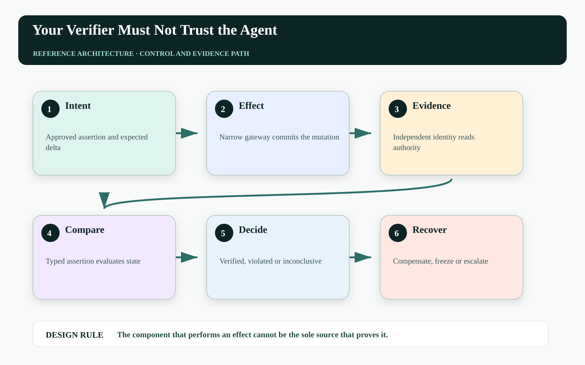
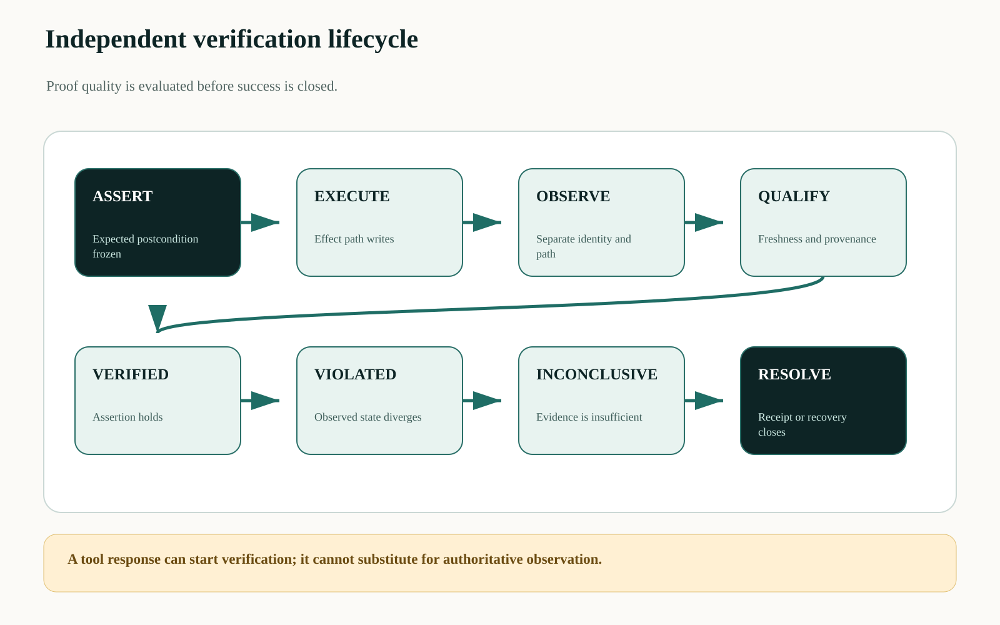
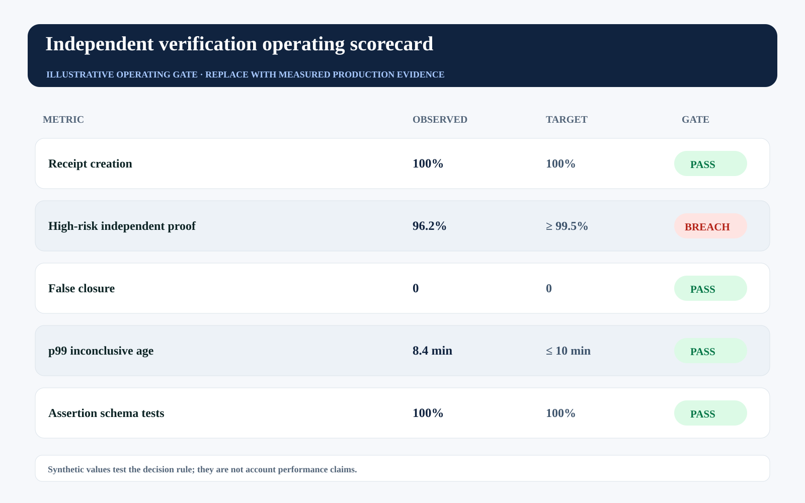

This story was developed with AI writing and visualization assistance. All incidents, thresholds, workloads, and operating values are illustrative unless a source is explicitly cited.
The agent says the customer record was updated, the tool says the call succeeded, and the trace shows no exception. None of those statements proves that the approved business state exists.
A verifier that consumes the agent's summary, uses the same credential, calls the same abstraction, and asks the same model whether the outcome looks right is not independent. It is a second opinion produced inside the first failure domain.
Verification should share the approved intent with execution—but not its identity, evidence path, implementation, or incentive to call the action successful.

Correlated verification creates confident false closure#
Execution and verification fail together when they share cached data, a tool adapter, a parsing assumption, or a broad principal. A malformed adapter can translate both the write and the read incorrectly. A compromised agent can shape the verifier's prompt. A stale replica can confirm a state that never reached the authoritative ledger.
The verification contract must therefore name the assertion, evidence authority, observation deadline, acceptable lag, and independence class. The verifier evaluates a structured postcondition—not the persuasiveness of the agent's explanation.
Separate the proposal, effect, and evidence planes#
The proposal plane defines the intended delta. The effect plane executes through a narrow gateway. The evidence plane uses a different service identity and, where material, a different authoritative interface such as an immutable ledger, database change feed, or provider reconciliation API.
A verification service compares intended and observed state, checks freshness and provenance, and emits one of four outcomes: verified, violated, inconclusive, or expired. Only verified closes success. Violation invokes recovery; inconclusive preserves ambiguity; expiry transfers ownership to a defined human queue.

Score verification independence explicitly#
A simple independence score makes correlated controls visible:
I_verify = w_id × sep(identity) + w_path × sep(data_path)
+ w_impl × sep(implementation) + w_auth × authority(source)
- w_corr × shared_failure_modes
close_success only if I_verify ≥ I_min ∧ freshness ≤ F_max ∧ assertion = trueThe score is ordinal unless its weights are empirically calibrated. Its value is architectural: a verifier using the same model, adapter, cache, and credential should not silently receive a high-assurance label.
| Independence dimension | Weak pattern | Stronger pattern |
|---|---|---|
| Identity | Agent reuses executor token | Verifier-only read principal |
| Path | Same tool wrapper | Authoritative reconciliation endpoint |
| Implementation | Same generated parser | Typed, separately tested assertion |
| Evidence | Agent narrative | Versioned source observation |
| Ownership | Agent closes itself | Control service owns terminal state |
Compile verification into an assertion#
The expected outcome should be machine-testable and bound to the approved action:
assertion_id: verify_quote_771_v43
action_id: act_01K...
source:
system: billing-ledger
interface: adjustment-by-action-id
max_lag_seconds: 45
expect:
account_id: A-1902
discount_bps: 800
occurrences: 1
outcomes: [verified, violated, inconclusive, expired]
on_violation: freeze_and_compensateAssertions should be generated from a reviewed schema, not free-form reasoning. Property-based tests can vary versions, delays, duplicates, and partial state to confirm the verifier fails closed when evidence is missing or contradictory.
Measure proof coverage and correlation#
Receipt coverage alone is insufficient if most receipts close on low-quality evidence. Track independent verification coverage by risk tier, inconclusive age, false closure discovered by later reconciliation, shared-dependency concentration, and assertion drift after schema changes.
The illustrative gate shows perfect receipt creation but a breach in high-independence coverage. That is exactly the condition a receipt-count dashboard would hide.

| Operating signal | Decision use | Failure interpretation |
|---|---|---|
| Independent proof coverage | Gate authority by risk tier | Execution is closing on correlated evidence |
| False closure | Trigger incident and retrospective | Verifier accepted an incorrect outcome |
| Inconclusive age | Escalate unresolved actions | Observation path or recovery capacity is weak |
| Shared-failure concentration | Add alternate evidence paths | Verifier is not meaningfully independent |
Failure-injection before production#
A design review cannot prove The component that performs an effect cannot be the sole source that proves it. The pre-production harness must interrupt the system at the transitions where ownership, authority, evidence, and business state can disagree. The objective is not to maximize a generic pass rate. It is to demonstrate that every material fault produces a bounded state, a named owner, and an admissible recovery transition.
| Injected fault | Experiment | Required evidence |
|---|---|---|
| Delayed or reordered work | Pause the path after EXECUTE and release it after VERIFIED | The stale path cannot manufacture terminal success |
| Authority becomes stale | Advance policy, mode, ownership, or resource version before effect commit | The final gateway rejects the old decision context |
| Evidence is missing or corrupted | Remove one authoritative observation or change its digest | The outcome remains violated, inconclusive, or owned—never guessed |
| Recovery itself fails | Interrupt compensation, handoff, or receipt closure | The action stays visible with an owner, deadline, and next legal transition |
Run the matrix at concurrency, with realistic dependency lag and with the same policy and gateway versions used in the candidate release. Report p95 and p99 resolution alongside the worst unresolved example. Averages can demonstrate throughput; they cannot erase a single material breach. Promotion should require replayable evidence for the controls, not a slide stating that the team considered the risk.
Three questions for the architecture review#
Where is truth decided? Name the authoritative source and the exact component permitted to advance the workflow into a terminal state. If the answer is ‘the agent interprets the tool response,’ the boundary is not yet independent.
Where is authority finally enforced? Follow the command through every queue, adapter, cache, provider, and downstream effect. A policy decision is useful only when the last material write boundary can reject a stale, changed, or excessive action.
What blocks promotion? Convert the scorecard into executable gates with owners and expiry. A breached tail metric must reduce scope, hold the cohort, or enter an approved exception path; it cannot remain decorative telemetry.
A practical implementation sequence#
1. Name the business postcondition. Replace ‘tool succeeded’ with one typed assertion on authoritative state.
2. Create a separate verifier identity. Grant read-only access only to the evidence required for that assertion.
3. Break the shared failure modes. Use fault injection to corrupt adapters, delay replicas, and forge executor responses while proving the verifier refuses false closure.
Primary references and boundaries#
The NIST AI Resource Center supports testing, evaluation, verification, and validation practices, while the AI RMF Core calls for documented validity, reliability, safety, monitoring, and response. The independence model here is a proposed engineering pattern, not a NIST requirement.
Independent does not mean infallible. Every evidence source has lag, compromise, and modeling risk. The design makes those dependencies explicit and prevents the agent from being judge of its own effect.
The operating conclusion#
A production agent should be able to say, ‘I attempted the action.’ Only an independent control path should be allowed to say, ‘The approved state now exists, exactly once, in the authoritative system.’
If your agent's tool adapter lied, which separate system would detect the lie?